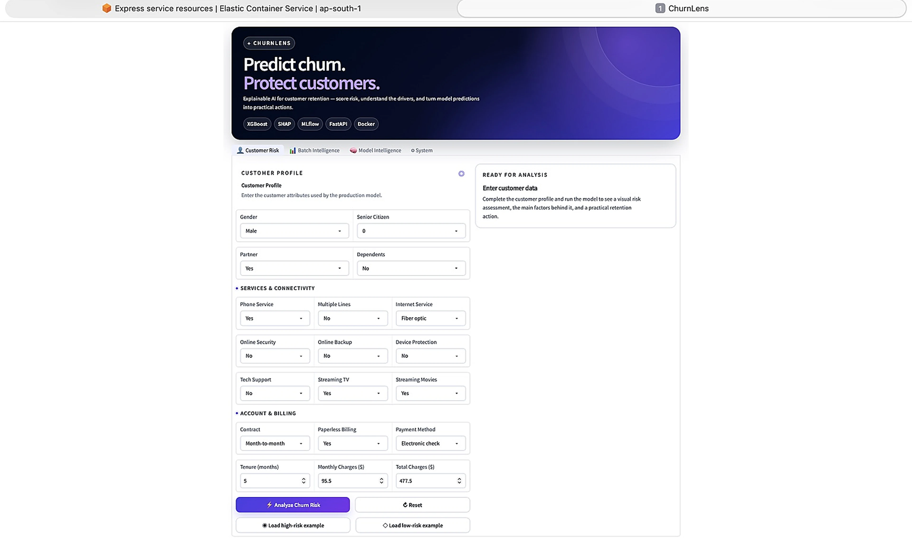
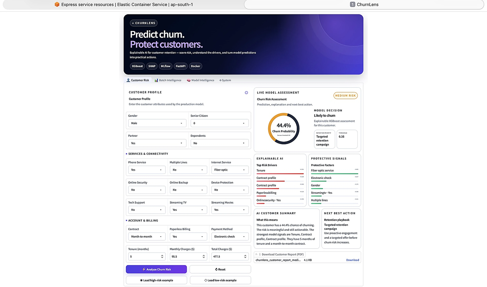
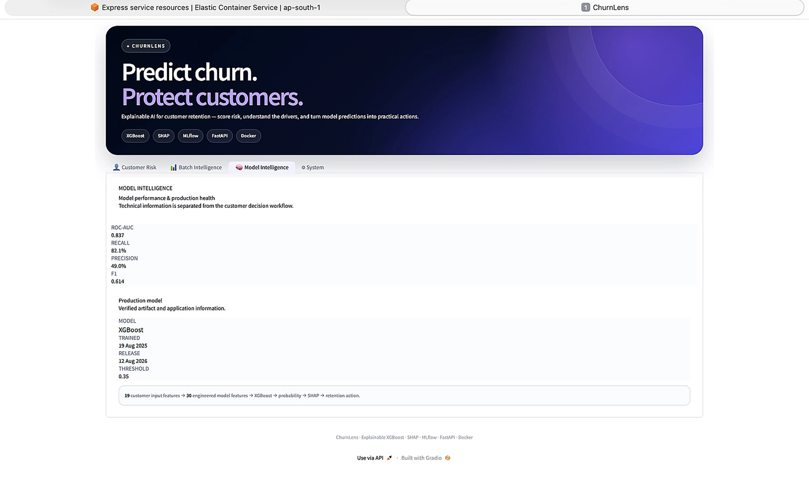

From prediction to actionable retention insight.
ChurnLens is an end-to-end customer churn intelligence workflow. Customer information is transformed into model-ready features, evaluated through an XGBoost classifier, converted into a risk decision, explained using local SHAP attributions, and translated into retention-oriented actions. The system also supports API and batch-scoring workflows.
From customer data to retention action.
The Retention Problem
A churn prediction score is difficult to act on when decision-makers cannot understand why a customer is at risk. ChurnLens addresses this gap by combining prediction with local explanations, risk segmentation and retention-oriented outputs.
Prediction & Explainability
ChurnLens combines an XGBoost classification model with a decision threshold and local SHAP explanations. The resulting prediction is converted into a customer risk tier and retention-oriented action, with support for both individual predictions and batch scoring.
From model to deployed application
The project is containerized with Docker and documented for AWS ECS/Fargate deployment. FastAPI provides the API layer, while the deployed application exposes an interactive UI for model inference and explanation.
Built beyond the model.
Inside the Application.


